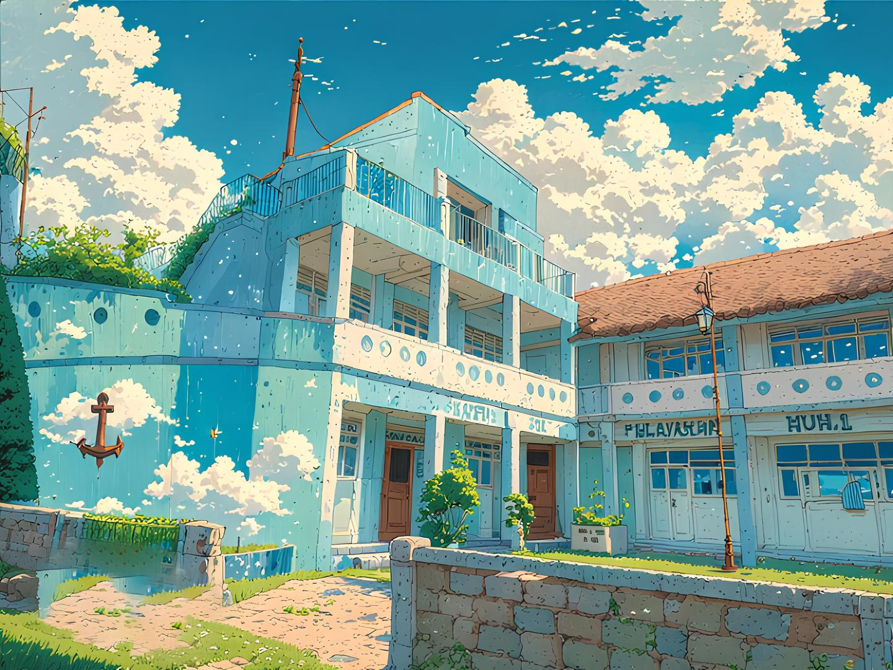

Program Keahlian Unggulan

Teknika Kapal Niaga
Membekali siswa dengan kompetensi mesin kapal, sistem kelistrikan maritim, perawatan engine kapal, dan teknologi kelautan modern.
Selengkapnya
Nautika Kapal Niaga
Mempelajari navigasi laut, manajemen kapal, keselamatan pelayaran, dan kepemimpinan di atas kapal.
SelengkapnyaSeni Musik Modern
Mengembangkan kreativitas dalam produksi musik, audio engineering, komposisi, dan industri kreatif digital.
SelengkapnyaPapan Informasi Sekolah
📅 Jadwal Pendaftaran
Pendaftaran peserta didik baru dibuka mulai 1 Mei – 30 Juni.
🏆 Prestasi Sekolah
Juara Lomba Kompetensi Siswa Tingkat Nasional Bidang Maritim.
🎵 Event Musik
Konser Tahunan Seni Musik Modern akan digelar bulan Agustus.
Profil Sekolah
SMK Muhammadiyah 1 Kalasan merupakan sekolah kejuruan berbasis maritim dan seni kreatif yang berkomitmen mencetak lulusan profesional, berkarakter Islami, serta siap bersaing di dunia global.
Dengan fasilitas modern, laboratorium praktik lengkap, dan tenaga pengajar berpengalaman, sekolah ini menjadi pusat pendidikan unggulan di wilayah Kalasan.

🌊 Visi
Menjadi sekolah kejuruan unggulan berbasis maritim dan seni modern yang menghasilkan lulusan profesional, mandiri, dan berakhlak mulia.
⚓ Misi
- Menyelenggarakan pendidikan berbasis industri.
- Mengembangkan keterampilan teknologi dan kreativitas.
- Meningkatkan karakter dan kedisiplinan siswa.
- Membangun kemitraan dengan dunia usaha dan industri.
Statistik Sekolah
0
Siswa Aktif
0
Guru & Staff
0
Prestasi Nasional
0
% Lulusan Terserap Kerja
"Membentuk Generasi Profesional Maritim & Kreatif"
Siap berlayar menuju masa depan gemilang bersama SMK Muhammadiyah 1 Kalasan.
Galeri Kegiatan


Testimoni Alumni
"Saya bangga menjadi lulusan SMK Muhammadiyah 1 Kalasan. Kompetensi yang diajarkan sangat relevan dengan dunia kerja."
- Alumni Teknika Kapal Niaga
"Pembelajaran navigasi dan kepemimpinan di sekolah ini sangat membantu saya saat bekerja di kapal internasional."
- Alumni Nautika Kapal Niaga
"Studio musiknya luar biasa! Saya sekarang bekerja di industri kreatif sebagai audio engineer."
- Alumni Seni Musik Modern
Video Profil Sekolah
Berita Terbaru

LKS Tingkat Nasional
Siswa Teknika meraih juara 1 lomba kompetensi nasional bidang maritim.
Baca Selengkapnya
Konser Tahunan Musik
Program Seni Musik Modern sukses menggelar konser spektakuler.
Baca Selengkapnya
Bergabunglah Bersama Kami
Wujudkan masa depan gemilang Anda bersama SMK Muhammadiyah 1 Kalasan.
Daftar Sekarang